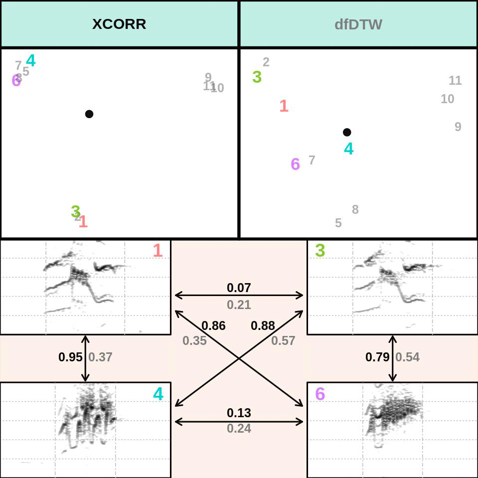
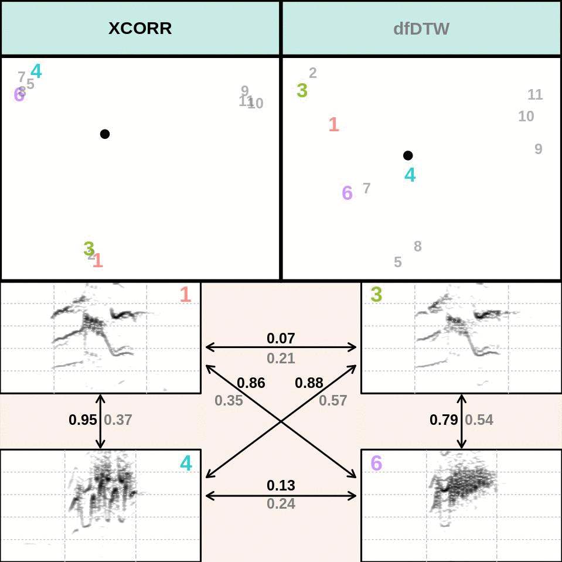
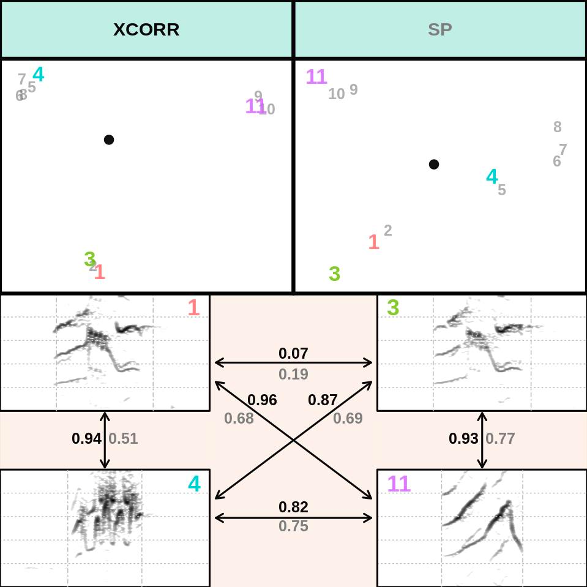
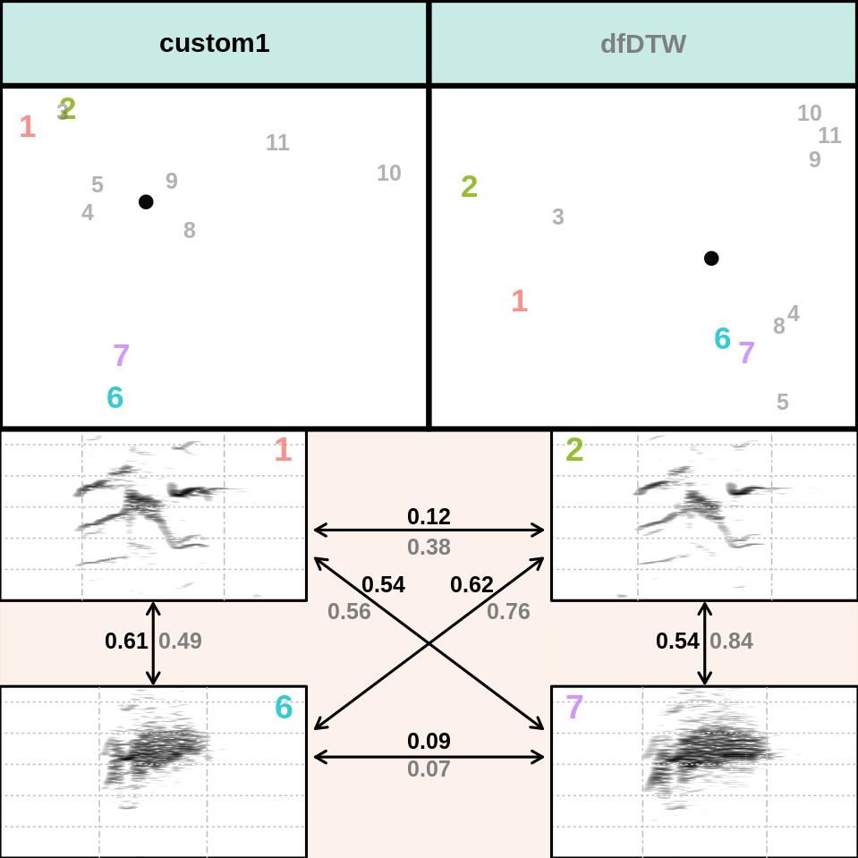

Comparing the performance of methods for measuring acoustic structure
Bioacoustic research is based on quantifying the structure of acoustic signals and comparing that structure between different behavioral / social / ecological contexts, groups or species. However, measuring the signal structure in a way that takes into account the most relevant variation in signal structure could be a difficult task. Some of the differences that are evident by visual inspection of spectrograms may not be detected by some analyzes. Therefore, choosing the most appropriate analytical approach is a critical step.
The compare_methods() function from warbleR attempts to facilitate the selection of the method. This function produces graphics (such as image files in the working directory) with spectrograms of 4 signals at a time, which allow visual inspection of the performance of acoustic analysis methods when comparing those signals. The signals are chosen randomly from the data frame or selection table provided (argument ‘X’). The function compares 2 methods at a time. The available methods are:
- Spectrographic cross correlation (using the
cross_correlation()function) - Dynamic time warping (DTW) in time series of dominant (using
freq_DTW()) and fundamental frequency (usingfreq_DTW()) - Spectral parameters (using
spectro_analysis()) - Descriptors of ceptrals coefficients (using
mfcc_stats())
The graphs also contain 2 scatter plots (1 for each method) of the acoustic space of all the signals in the input data frame ‘X’. The position of the 4 signals in the spectrograms is highlighted in the acoustic space plots. In this way, users can directly assess whether the distances between the signals in the acoustic space accurately represent the spectrographic similarity (i.e. how similar its structure looks on the spectrograms).
1 Compare methods in warbleR
This is a brief example of how to use the function using the data files included in the package (and in the examples folder). Simply execute the function by selecting the 2 methods you want to compare. The following code compares spectrographic cross correlation (XCORR) and dynamic time warping in the dominant frequency contours (freq_DTW). The compared selections are randomly selected from the set of selections in the input data frame. The argument ‘n’ defines the number of comparisons (that is, graphs) that must be created:
Code
library(warbleR)
data("lbh_selec_table")
# global parameters
warbleR_options(wav.path = "./examples", flim = c(0, 10), bp = c(0, 10), wl = 300, n = 12)
compare_methods(X = lbh_selec_table, methods = c("XCORR", "dfDTW"))
It must produce 12 image files (in the working directory) that look like this one:

Looking at several iterations of the comparison, you can have a better idea of which method works best for the signals being analyzed:

The distance of the acoustic pair between the signals is shown next to the arrows that link them. The font color of a distance value corresponds to the font color of the method that generated it, as shown in the scatter diagrams (in this case, the black font represents the XCORR distances). The distances are standardized, being 0 the distance of a signal to itself and 1 the distance in pairs farthest in the set of signals. The principal component analysis (function prcomp()) is applied to calculate distances when spectral parameters (SP) are used. In that case the first 2 components are used. Classic multidimensional scaling, also known as principal coordinate analysis, function cmdscale()) is used for all other methods. The file name contains the methods that are compared and the row number of the selections. This function internally uses a modified version of the spectro() function of the seewave package to create spectrograms. Note that all spectrograms are plotted with the same frequency and time scale.
Code
compare_methods(X = lbh_selec_table, methods = c("XCORR", "SP"))
Exercise
Use the
compare_methods()function to compare the following methods:- descriptors of cepstral coefficients (“MFCC”) vs cross-correlation (“XCORR”)
- dynamic time warping on dominant frequency contours (“dfDTW”), spectrographic parameters (“SP”)
Which method better represents the variation in signal structure for each comparison?
Compare the best methods from the two comparison above
2 Compare custom measurements
Alternatively, you can provide your own data. This could be useful to eliminate unwanted parameters or to enter parameters obtained with other programs (for example, from Raven). To do this, enter your data with the argument custom1. The following example 1) calculate the spectral parameters with the spectro_analysis() function, 2) select only the first 7 columns of the output, and 3) enter this data in compare_methods():
Code
# measure parameters
Y <- spectro_analysis(lbh_selec_table)
# selec a subset
Y <- Y[, 1:7]
# PCA
Y <- prcomp(Y[, 3:ncol(Y)])$x
# add sound files and selec columns
Y <- data.frame(lbh_selec_table[, c(1, 3)], Y[, 1:2])
compare_methods(X = lbh_selec_table, methods = c("dfDTW"), custom1 = Y)
Note that there is also a custom2 argument for entering another custom data. The function has many other arguments for specifying methods (for example bandpass, overlap) and spectrogram settings (margin, grid, frequency limits, etc).
Session information
R version 4.2.2 Patched (2022-11-10 r83330)
Platform: x86_64-pc-linux-gnu (64-bit)
Running under: Ubuntu 20.04.5 LTS
Matrix products: default
BLAS: /usr/lib/x86_64-linux-gnu/blas/libblas.so.3.9.0
LAPACK: /usr/lib/x86_64-linux-gnu/lapack/liblapack.so.3.9.0
locale:
[1] LC_CTYPE=es_ES.UTF-8 LC_NUMERIC=C
[3] LC_TIME=es_CR.UTF-8 LC_COLLATE=es_ES.UTF-8
[5] LC_MONETARY=es_CR.UTF-8 LC_MESSAGES=es_ES.UTF-8
[7] LC_PAPER=es_CR.UTF-8 LC_NAME=C
[9] LC_ADDRESS=C LC_TELEPHONE=C
[11] LC_MEASUREMENT=es_CR.UTF-8 LC_IDENTIFICATION=C
attached base packages:
[1] stats graphics grDevices utils datasets methods base
loaded via a namespace (and not attached):
[1] Rcpp_1.0.10 rstudioapi_0.14 knitr_1.41 magrittr_2.0.3
[5] MASS_7.3-58.2 NatureSounds_1.0.4 rjson_0.2.21 rlang_1.0.6
[9] fastmap_1.1.0 pbapply_1.6-0 stringr_1.5.0 warbleR_1.1.28
[13] tools_4.2.2 parallel_4.2.2 xfun_0.35 dtw_1.23-1
[17] cli_3.6.0 htmltools_0.5.4 yaml_2.3.6 digest_0.6.31
[21] lifecycle_1.0.3 tuneR_1.4.1 htmlwidgets_1.5.4 vctrs_0.5.2
[25] bitops_1.0-7 signal_0.7-7 RCurl_1.98-1.9 seewave_2.2.0
[29] glue_1.6.2 evaluate_0.19 rmarkdown_2.19 proxy_0.4-27
[33] stringi_1.7.12 compiler_4.2.2 jsonlite_1.8.4 fftw_1.0-7